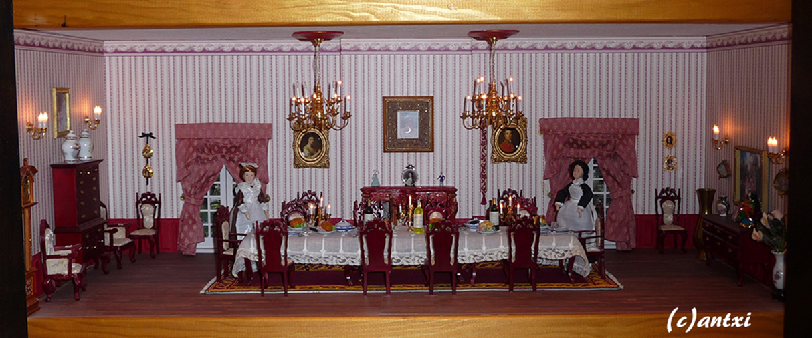

×

All the clothing on the house is handmade, like the curtains or the rug in this room as well as the tablecloth. We bought the furniture and decoration over the years in some fairs or online, and some nice details like empress Sisi in a plate on top of the chimney from Vienna.
You'll find Lizzie Bennet on a frame on top of the chimney.